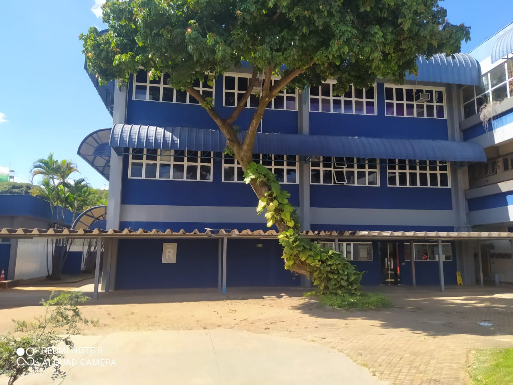

DESCRIÇÃO
O Bloco R é parte integrante do Bloco Central, que foi o primeiro bloco inaugurado na UCB. Historicamente, abrigou os alunos do Centro Educacional Católica de Brasília antes de sua transferência para uma área mais ampla.
SALAS E DEPARTAMENTOS
- TÉRRIO: sala R.001 que é dividida em dus salas a R.001 A e a R.001 B ambas são laboratorios de informatica, contém também banheiros para pcd,tem uma papelaria e um centro de primeiros socorros.
- 2º ANDAR: sala R.100 que é a sala para EAD, contendo sanitários com bebedores também
- 3º ANDAR: sala R.200 que é um grande espaço com várias salas dentro
HORÁRIO DE FUNCIONAMENTO
- De segunda a quinta-feira, das 8h às 21h, e sexta-feira, das 8h às 20h.